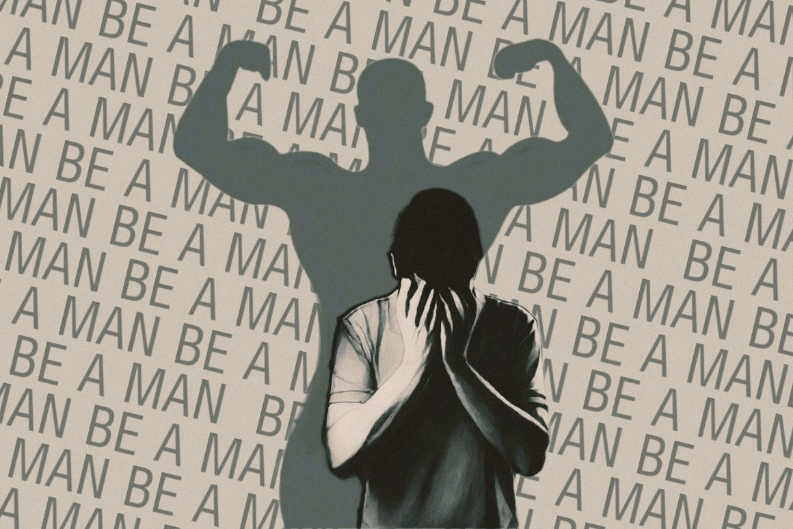

Men's mental health is important because men deal with mental problems as well. A lot of times society neglects their health which cause themselves to dismiss it leading to anger issues, drug abuse, and even domestic abuse and other unhealthy methods of coping which can be detrimental to their health and others.
The stereotype is that men are supposed to be strong and insensitive and bear the weight of everything on their back, when the truth is that no real human can do this.
These unrealistic standards can cause many things.
While men's mental health as a whole cannot be directly stopped or ended, people can still do a lot to help. One of these things is to stop neglecting/dismissing them when they open up. Due to the stereotype that men are supposed to "be men", they almost never talk about their feelings so when they do, it's important to take it seriously. You don't have to comfort them or anything but at least hear them out. Venting through words is better than venting through things like anger or violence and can stop outbursts. In addition stop the "men must be men"stereotype, it traps them in a box and often times makes them scared to be themselves or do certain actions. They are men regardless of what they do so stop pushing this stereotype or using it to manipulate them.